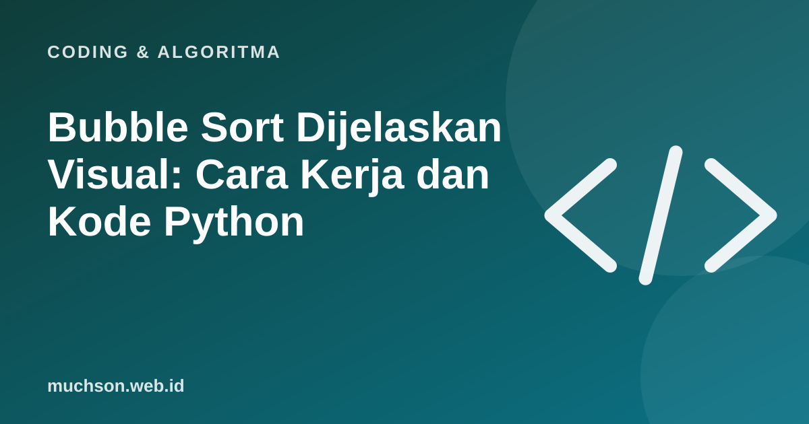

Beranda › Artikel › Coding & Algoritma
Coding & AlgoritmaBubble Sort Dijelaskan Visual: Cara Kerja dan Kode Python
Bubble sort bukan algoritma tercepat. Tetapi karena sangat sederhana, ia sering menjadi pintu masuk memahami cara komputer mengurutkan data. Di sini Anda bisa menjalankannya langkah demi langkah, mundur, dan mengulang sampai benar-benar paham.

Ide dasarnya dalam satu kalimat
Bandingkan dua angka bersebelahan, tukar bila urutannya salah, lalu ulangi dari awal sampai tidak ada yang perlu ditukar. Angka terbesar "menggelembung" ke ujung kanan di setiap putaran, seperti gelembung udara yang naik ke permukaan, itulah asal namanya.
Coba langsung
Amati dua hal: batang tertinggi selalu "berjalan" ke kanan, dan setelah putaran pertama, satu batang di ujung kanan sudah final. Karena itu putaran berikutnya tidak perlu lagi memeriksa ujung tersebut.
Kode Python
def bubble_sort(a):
n = len(a)
for i in range(n - 1):
ada_tukar = False
for j in range(n - 1 - i):
if a[j] > a[j + 1]:
a[j], a[j + 1] = a[j + 1], a[j]
ada_tukar = True
if not ada_tukar: # sudah urut, berhenti lebih awal
break
return a
print(bubble_sort([5, 2, 9, 1, 7])) # [1, 2, 5, 7, 9]Variabel ada_tukar adalah optimasi kecil: kalau satu putaran penuh tidak menukar apa pun, data pasti sudah urut dan kita boleh berhenti. Pada data yang hampir urut, ini membuat bubble sort sangat cepat.
Seberapa lambat? Kompleksitas waktu
Ada dua perulangan bersarang, jadi untuk n data kira-kira dibutuhkan n × n perbandingan. Dalam notasi Big O ditulis O(n²). Artinya jika jumlah data digandakan, pekerjaan menjadi sekitar empat kali lipat. Geser slider di bawah dan lihat sendiri bagaimana O(n²) membengkak dibandingkan algoritma lain.
| Algoritma | Kasus terbaik | Kasus rata-rata | Kasus terburuk | Memori tambahan |
|---|---|---|---|---|
| Bubble sort | O(n) (dengan penanda ada_tukar) | O(n²) | O(n²) | O(1) |
| Selection sort | O(n²) | O(n²) | O(n²) | O(1) |
| Insertion sort | O(n) | O(n²) | O(n²) | O(1) |
| Merge sort | O(n log n) | O(n log n) | O(n log n) | O(n) |
| Quick sort | O(n log n) | O(n log n) | O(n²) | O(log n) |
Bandingkan dengan dua saudaranya
Ingin melihat saudara-saudaranya bergerak? Ubah pengaturannya di artikel lain di situs ini, atau salin kode di atas dan ganti isinya sendiri.
Kapan bubble sort layak dipakai?
- Belajar. Untuk memahami perulangan bersarang, penukaran, dan Big O.
- Data sangat kecil atau hampir urut, dengan penanda berhenti dini.
- Tidak untuk produksi dengan data besar. Bahasa pemrograman sudah menyediakan pengurutan yang jauh lebih cepat (
sorted()di Python memakai Timsort).